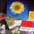

Integrated Marketing to Increase Understanding and Sales
BackgroundWhen visual arts professionals think about color, they think of PMS (Pantone Matching System). However, the very strength of the PMS acronym has weakened recognition of the Pantone name, posing a problem for upcoming Pantone new product launches.
To increase recognition and understanding, we recommended the creation of a broad, unified communications strategy that would ring true to an audience that shared Pantone's passion for color and that would - through tone, look and personality - build on Pantone's established credibility and product excellence.
Positioning
For positioning, we suggested that Pantone emphasize its leadership position and build upon the strength of its product - simply put "The Power of Color," which we created as the tag line.
Identity
At the heart of the new visual message is the Pantone color "chip," an easily recognizable symbol which drives the overall look of stationary items, packaging, advertising, direct mail, promotions.
Corporate Image Advertising
Emphasizing "The Power of Color", which we created as the tag line, corporate advertising playfully featured everyday objects whose colors were tagged with numbers from the Pantone color matching system. The Pantone "chip" that matched the most prominent color in the ad was featured alongside ad copy.
Marketing Existing Products
New packaging and a campaign to promote sales of Pantone's Color Formula Guides was created to prompt customers who regularly used outdated or faded guides to purchase new ones.
Launch of New Brand
An integrated business-to-business campaign was created to launch "Color Drive," a system that allowed art director and designer to reconcile colors on their computer monitors more acclimated with PMS colors. It is comprised of advertising, direct marketing, packaging and collateral. The campaign's primary ad features a "scientific" chart of the brain mapped out in rich hues with the headline "Now Available On Disk." The advertising is placed in trade publications and consumer technology magazines such as Wired and MacWeek. The accompanying direct marketing effort includes letters, brochures, packaging and point-of-purchase posters (displayed initially in-store and, later, at trade shows).